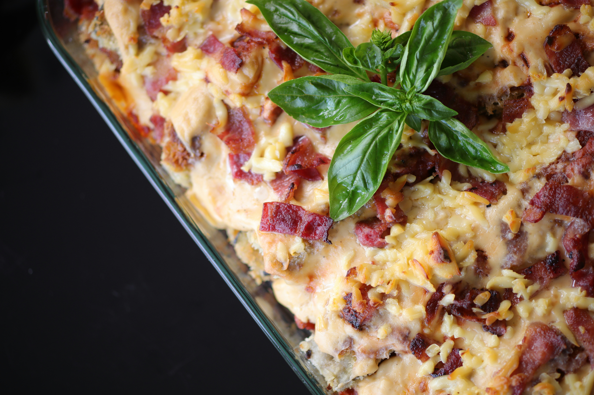

Baked Ziti.
Photo by Stanley Dumanig on Unsplash
Quick to make. Very easy recipe.!
A quick and easy way to prepare a tasty and filling pasta dish, originally from Mr. Food. Just use your favorite bottled spaghetti sauce. You can use any shape of pasta. I do add more cheese, but I love cheese!
Ingredients
- 1/2 lb ziti pasta
- 16 ounces ricotta cheese
- 3 cups mozzarella cheese, grated
- 3 cups spaghetti sauce
- 1/2 cups parmesan cheese, grated
Steps
- Preheat oven to 350.
- Boil ziti, following package directions, drain and place in a large bowl.
- Mix all the ricotta cheese and half of the mozzarella with the ziti.
- Spray a 13x9 pan with Pam.
- Cover the bottom half of the pan with about half the sauce.
- Put the ziti mixture on top of sauce.
- Pour remaining sauce on top of ziti.
- Sprinkle with the parmesan cheese.
- Top with the remaining mozzarella cheese.
- Bake for 20-30 minutes until cheese is melted and it is lightly golden.
Home